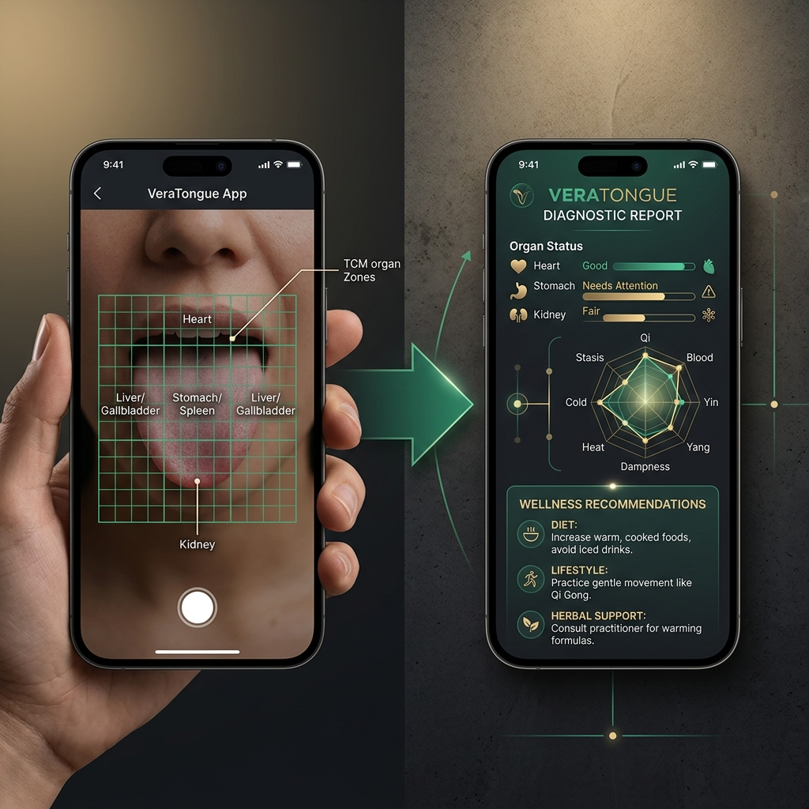
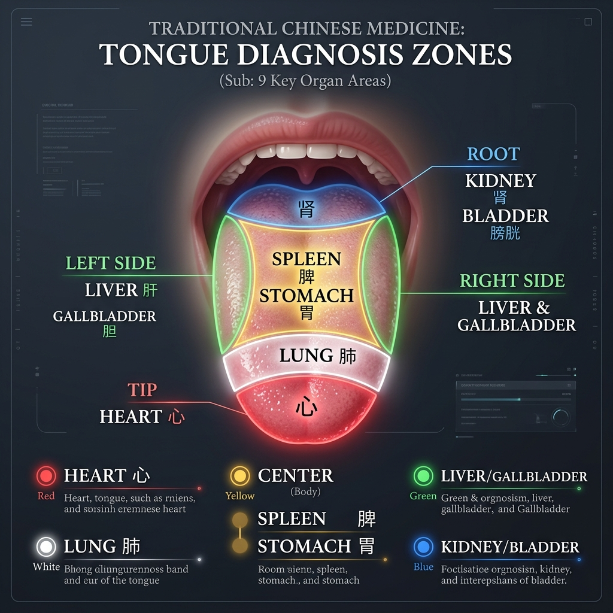
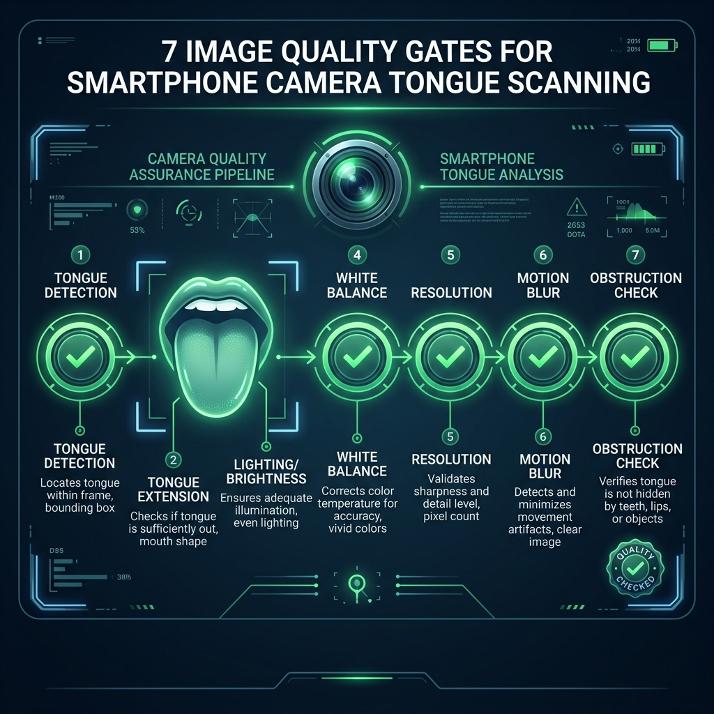
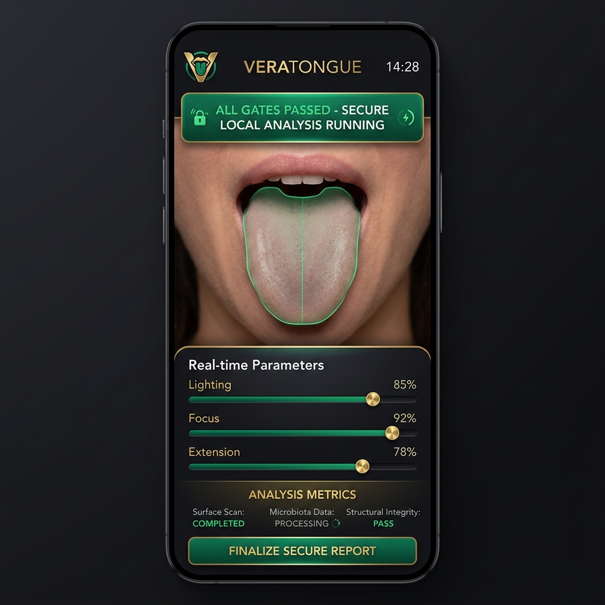

VeraTongue: Sovereign On-Device Tongue Analysis & Computer Vision
Published: May 22, 2026 | Technology Analysis by DESTILL.ai
⚡ Executive Summary
VeraTongue implements a zero-cloud, 100% on-device biometric analysis engine that maps the surface of the human tongue to internal organ health states. By applying the classical TCM topography of Giovanni Maciocia through advanced localized computer vision (TRIZ-optimized canvas heuristics), the system bypasses cloud dependency and privacy leaks, delivering immediate, high-fidelity physiological feedback.

VeraTongue's on-device scanning view: real-time camera grid alignment combined with localized biomarker indicators.
Start with WHY: The Diagnostic Mirror in Your Pocket
For the average person on the street, tracking daily wellness is an exercise in guesswork. We wear smartbands to count our steps and measure our heart rate, but these metrics only scratch the surface of our metabolic and constitutional health. How do we know if our digestive system is struggling, if our body is chronically dehydrated, or if we are carrying systemic inflammation before symptoms arise?
For over two thousand years, Eastern medicine has utilized a natural diagnostic mirror: the human tongue. In TCM, the tongue body and its coating act as a visible dashboard of the internal organs. Because the tongue has an extremely rich vascular supply and is constantly bathed in saliva, changes in systemic circulation, hydration, and cellular turnover are immediately reflected on its surface.
VeraTongue translates this ancient diagnostic wisdom into modern digital reality. By turning your smartphone camera into a secure, private physiological scanner, it provides a direct window into your internal balance—completely locally, with zero data sent to external servers.
"The tongue does not lie. It is an external extension of the internal visceral environment, mapping hydration, blood stasis, and metabolic heat in real time."
— Traditional Chinese Medicine Topography Principles
Technological Foundation: The tongue_analyst Engine
At the heart of the system lies the tongue_analyst engine, which integrates classical organ mapping with rigid computer vision validations. The analysis is structured across three core layers: the 7 Image Quality Gates, the 9-Zone Topographical Map, and the 8 Diagnostic Dimensions.
1. The 7 Non-Negotiable Quality Gates
Clinical reliability is highly sensitive to input variables. To prevent false readings due to motion, poor illumination, or camera angle, the engine forces the user's input through 7 sequential quality filters before executing any diagnostic logic:
1
Tongue Detection & Extension
Detection Gate: Samples pixels in the guide overlay boundary to identify tongue-colored ranges (R > G × 1.15 and R > B × 1.15 for ≥10% of pixels).
Extension Gate: Ensures the tongue extends to fill at least 40% of the guide overlay height, confirming the Kidney area (root) is fully exposed.
2
Optical & Environmental Calibration
Brightness Check: Validates that average pixel brightness (Luminosity scale 0–255) is strictly between 45 and 220 to prevent overexposure or deep shadow.
White Balance Gate: Verifies the ratio of Blue to Red channels (mean B / mean R must be between 0.5 and 1.5) to filter out colored ambient lighting, aligning the sensor with the D65 daylight standard.
3
Sensor Integrity & Obstruction
Resolution & Sharpness: Rejects camera inputs below 640×480 pixels and uses grayscale Laplacian variance checks to block frames with motion blur (variance threshold < 100).
Obstruction Check: Scans the upper 15% of the frame to ensure lips, teeth, or fingers do not block the root of the tongue (triggering if >80% skin-tone pixels are present in that region).
2. The Maciocia Tongue Map (9 Organ Zones)
Once the image passes all 7 gates, the canvas is mapped using coordinate divisions corresponding to Giovanni Maciocia's classical guidelines. The tongue bounding box is segmented into nine diagnostic zones:
Zone ID
Topographical Location
Associated Organ System
San Jiao Burner
Z1
0–8% from tip
Heart (心)
Upper Burner
Z2
8–25% from tip
Lung (肺)
Upper Burner
Z3-L
Left side, 25–65%
Liver (肝)
Middle Burner
Z3-R
Right side, 25–65%
Gallbladder (胆)
Middle Burner
Z4
Center, 25–65%
Spleen & Stomach (脾胃)
Middle Burner
Z5
65–100% (root)
Kidney (肾)
Lower Burner
Z6
Deep root
Bladder & Intestines
Lower Burner
3. The 8 Diagnostic Dimensions
The local algorithm extracts features from each zone and maps them across 8 dimensional axes:
Body Color: Analyzes blood flow and vascular density. Pale pink is healthy; pale indicates Qi or blood deficiency; red indicates heat; and purple represents blood stasis.
Shape: Measures muscular tone and tissue volume. Swollen tongues point to dampness accumulation, while thin tongues suggest fluid or blood deficiency.
Tooth Marks: Detects lateral scalloping caused by tongue swelling pressing against teeth, a key indicator of digestive deficiency.
Coating: Evaluates oral flora and mucous buildup. A thin white coat is normal; thick yellow indicates internal heat; greasy/oily indicates damp-phlegm; and peeled spots indicate fluid depletion.
Cracks & Fissures: Identifies structural changes. A deep vertical crack down the center indicates chronic stress or digestive fluid weakness.
Sublingual Veins: Evaluates venous pressure and microcirculation. Distended, dark, or varicose veins under the tongue point to cardiovascular congestion or chronic blood stasis.
Moisture: Measures salivary gland output. Dripping wet suggests poor fluid transport; dry points to hydration depletion or systemic heat.
Movement & Tremor: Checks neuromotor stability. Tremors or deviation suggest internal wind or neurological strain.
Visual Evidence Gallery
Below is the diagnostic documentation illustrating the layout of the zones, the sequence of the image gates, and the user interface flow:

Figure 1: The Maciocia organ-zone topography as segmented by the computer vision system.

Figure 2: Sequential verification of the 7 image quality gates before analysis execution.

Figure 3: Clean, high-fidelity dark interface showing on-device analysis and real-time parameters.
TRIZ Contradictions Dissolved
Developing a high-performance clinical tool that runs entirely within consumer hardware presented multiple fundamental engineering trade-offs. The development team resolved these using the TRIZ framework:
Clinical Accuracy vs. Consumer Camera Variability: Resolved via Principle 35 (Parameter changes). By introducing the 7-gate validation system, the software rejects inconsistent, blurry, or badly illuminated images at the point of capture, maintaining a clean diagnostic input baseline.
Deep Organ Mapping vs. Serverless Privacy: Resolved via Principle 1 (Segmentation). The tongue's bounding box is segmented into dedicated canvases. These sub-canvases are processed locally in Lab color space using K-means clustering, keeping the raw biometric data inside the device's volatile memory.
Scientific Integrity vs. Non-Medical Regulatory Constraints: Resolved via Principle 17 (Another dimension). The generated output strictly separates traditional constitutional patterns from Western physiological indicators, making it an educational wellness tool rather than a regulated medical device.
Open Questions for the Community
As we refine the tongue_analyst framework, we invite practitioner and developer input on:
How does ambient lighting variability affect the sublingual vein classification, and can we improve calibration beyond standard red/blue ratios?
What are the most effective visual indicators for distinguishing constitutional cracks from temporary, stress-induced cracks?